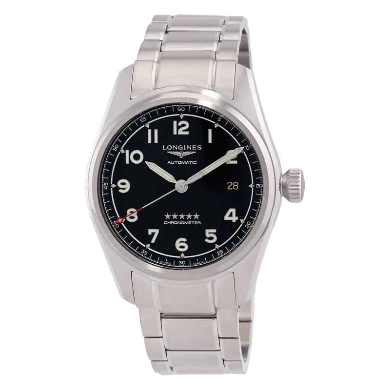

Encyclopedia / Longines / Spirit

Current deal · verified Oct 19, 2026, 10:23 PM ET
$1,912 List $2,550
Save $638 (25%) · new · Jomashop
Ref. L3.810.4.53.6 · In stock (per Jomashop)
Brand new from Jomashop, a grey-market (non-authorized) dealer, so expect the store's warranty (Jomashop lists '2 Year Jomashop Warranty') rather than the brand's. 'List' is the retail figure the dealer displays; I could not confirm it on the brand's own US site. Prices change fast; check the store before you buy.
Price comparison: fixed-price listings
| Store | Condition | Box & papers | Asking price | Link | Checked |
|---|---|---|---|---|---|
| Jomashop | new | Yes* | $1,912.50 | View | Oct 19, 2026 |
| Chrono24 marketplace seller | new | Not stated | $2,056 | View | Oct 19, 2026 |
Fixed-price (buy-now) asking prices in USD for ref. L3.810.4.53.6, cheapest new and cheapest pre-owned with box and papers per store, sorted low to high and checked Oct 19, 2026 (ET). Buy-now listings only. Pre-owned listings are shown only when the listing states box and papers. * New from a grey-market dealer: comes boxed, but the warranty card may be the dealer's rather than the brand's. Chrono24 rows are individual third-party marketplace sellers. Prices change fast; confirm with the store.
What it really costs
| Market | Price | Source |
|---|---|---|
| List price per Jomashop | $2,550 | jomashop.com |
| New at Jomashop | $1,912 | Jomashop |
| Pre-owned (Chrono24 asks) | about $1,750 – $3,000 (median ~$2,200, 29 listings sampled) | Chrono24 |
All prices in USD, checked Oct 19, 2026 (ET). Pre-owned ranges are the middle 80% of asking prices on the first Chrono24 results page for that ref (about 60 listings, used and some unworn), fixed-price listings only. Grey-market = brand-new from a non-authorized dealer.
Buying guide
Key references
| Ref. | What it is | US retail |
|---|---|---|
| L3.810.4.53.6 | Spirit Automatic Men's Watch | $2,550 |
Which one I'd pick
Spirit or Zulu Time? The Spirit is the simpler three-hand version; the Zulu Time adds a GMT and has its own page.
What to check before you buy
- Warranty: grey-market new watches usually carry the dealer's warranty, not the brand's. Ask which one you get and whether the brand's warranty card is included.
- Exact reference: dial colour, size and strap change the price. Match the full ref (L3.810.4.53.6) before comparing deals.
- Fakes and red flags: be wary of prices far below the ranges above, stock photos only, or sellers who won't show the caseback, serial and papers.
Alternatives worth a look
- Longines Spirit Zulu Time: The GMT version. (39 mm stainless steel, Calibre L844.4, retail $3,550 (L3.802.4.63.6))
- IWC Pilot's Watch Mark XX: The IWC pilot benchmark. (40 mm stainless steel, IWC Calibre 32111, retail $5,900 (IW328201))
- Hamilton Khaki Aviation Pilot Day Date: A cheaper pilot watch. (42 mm Stainless Steel, Hamilton Calibre H-40, retail $1,125 (list price per Jomashop & WatchMaxx))
History
Longines was founded in Saint-Imier, Switzerland, in 1832 by Auguste Agassiz; its winged-hourglass logo, registered in 1889, is the oldest unchanged active trademark registered with WIPO.
The Spirit L3.810.4.53.6 checked here is an automatic, per Jomashop.
Specifications
| Brand | Longines |
|---|---|
| Model | Spirit |
| Key references | L3.810.4.53.6 |
| Launch year | Not confirmed |
| Case | 40 mm Stainless Steel |
| Crystal | Scratch Resistant Sapphire |
| Caseback | Solid |
| Bezel | Fixed |
| Bezel material | Stainless Steel |
| Dial | Matte Black |
| Strap/bracelet | Stainless Steel |
| Functions | Hour, Minute, Second |
| Movement | Longines Calibre L888.4, automatic |
| Power reserve | About 64 hours |
| Water resistance | 100 m |
| Approx. US retail (Oct 2026) | $2,550 (list price per Jomashop) |
Specs from the retailer (Jomashop/WatchMaxx) or brand product page linked above for the main reference; see our research notes for which. Retail prices are list prices, not market value, and change often.
Highlights
- Automatic movement
- Pilot-style dial
- Steel case
FAQ
How much is the Longines Spirit?
List price per Jomashop: $2,550. New, the best verified price was $1,912 at Jomashop (checked Oct 19, 2026, 10:23 PM ET). Pre-owned asks on Chrono24 mostly ran $1,750 to $3,000.
What movement does the Spirit use?
The L3.810.4.53.6 checked here uses the Longines Calibre L888.4 (automatic) with about 64 hours of power reserve.
How big is the Spirit?
40 mm Stainless Steel.
Is the Spirit water resistant?
Yes, it's rated to 100 m.
Want this watch for less?
Every week I hunt down genuine deals on watches like the Spirit and send the best ones. Free, one email a week.
Get the free weekly issuePrices and availability last checked Oct 19, 2026. No affiliate links: I don't earn anything if you buy. Sources are listed in our research notes and linked above.